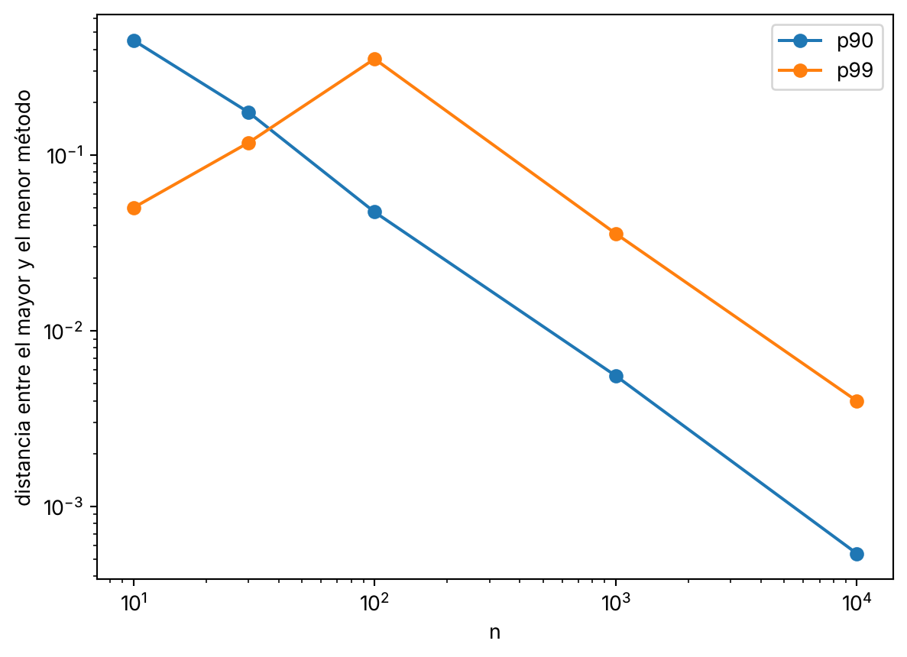

import numpy as np
import matplotlib.pyplot as plt
METODOS = {
"inverted_cdf": 1, "averaged_inverted_cdf": 2, "closest_observation": 3,
"interpolated_inverted_cdf": 4, "hazen": 5, "weibull": 6, "linear": 7,
"median_unbiased": 8, "normal_unbiased": 9,
}Tu percentil 90 de diez números puede valer 9 o 9,9
simulación
python
Hay al menos nueve definiciones de cuantil muestral y tu programa usa una sin avisar. Cuándo importa cuál y cuándo no.
Tienes los números del 1 al 10. Pides el percentil 90.
numpy te dice 9,1. Excel, con PERCENTILE.EXC, te dice 9,9. Y numpy, con method="inverted_cdf", te dice 9.
Nadie se ha equivocado. El percentil 90 de una muestra no tiene una definición única.
Nueve formas de calcularlo
En 1996, Rob Hyndman y Yanan Fan compararon las nueve definiciones de cuantil muestral que usaban los paquetes estadísticos de la época. Las numeraron del 1 al 9. Hoy se las sigue llamando tipos.
numpy las trae todas en el argumento method. Las pruebo con los números del 1 al 10.
x = np.arange(1, 11)
for metodo, tipo in METODOS.items():
print(f"{metodo:27s} tipo {tipo} {np.percentile(x, 90, method=metodo):.4f}")inverted_cdf tipo 1 9.0000
averaged_inverted_cdf tipo 2 9.5000
closest_observation tipo 3 9.0000
interpolated_inverted_cdf tipo 4 9.0000
hazen tipo 5 9.5000
weibull tipo 6 9.9000
linear tipo 7 9.1000
median_unbiased tipo 8 9.6333
normal_unbiased tipo 9 9.6000Van de 9 a 9,9. Sobre una escala de 1 a 10, no es poco.
El 10 que podrías esperar de un “redondea hacia arriba” sale con method="higher". Es una opción que numpy añade por su cuenta.
De dónde salen las diferencias
Con los números del 1 al 10, cada dato vale lo mismo que su posición. Así que el percentil es la posición que cada método le asigna al 90%.
El tipo 7 es el que usa numpy por defecto (linear). También R, y Excel con PERCENTILE.INC. Coloca el percentil en la posición \((n-1)p+1\). Con \(n=10\) y \(p=0{,}9\), eso es \(9{,}1\).
El tipo 6 usa \((n+1)p\), que da \(9{,}9\). El tipo 5 usa \(np+\tfrac12\), que da \(9{,}5\).
Lo que cambia es dónde coloca cada uno los datos entre 0 y 1. El tipo 7 pone el 1 en 0 y el 10 en 1. Para él, el 10 es el percentil 100. El tipo 6 deja hueco por los dos lados: el 1 cae en 1/11 y el 10 en 10/11. Así el 90% le queda casi pegado al 10. El tipo 5 se queda en medio y pone el 10 en 0,95.
Hyndman y Fan miraron qué propiedades razonables cumple cada definición y recomendaron el tipo 8, porque sus estimaciones salen aproximadamente insesgadas en mediana sea cual sea la distribución. Casi nadie lo usa por defecto. Yo, hasta escribir esto, no había mirado nunca qué tipo estaba usando.
Cuándo deja de importar
Diez datos son pocos. Mira qué pasa cuando hay más.
Simulo muestras normales. Para cada tamaño \(n\) calculo el percentil con los nueve métodos y me quedo con la distancia entre el mayor y el menor. Luego promedio sobre muchas muestras.
def rango(n, q, reps):
np.random.seed(1)
muestras = np.random.normal(size=(reps, n))
v = np.array([np.percentile(muestras, q, axis=1, method=m) for m in METODOS])
return (v.max(axis=0) - v.min(axis=0)).mean()
ns = [10, 30, 100, 1000, 10000]
res = {q: [rango(n, q, 500 if n < 10000 else 100) for n in ns] for q in (90, 99)}
for q in res:
print(q, [round(r, 4) for r in res[q]])90 [0.4516, 0.1757, 0.0475, 0.0055, 0.0005]
99 [0.0502, 0.1178, 0.3535, 0.0358, 0.004]Para el percentil 90 la distancia se encoge deprisa. De 0,45 con diez datos a 0,0055 con mil. A partir de ahí es un detalle.
El percentil 99 se porta peor.
fig, ax = plt.subplots()
for q in res:
ax.plot(ns, res[q], marker="o", label=f"p{q}")
ax.set_xscale("log")
ax.set_yscale("log")
ax.set_xlabel("n")
ax.set_ylabel("distancia entre el mayor y el menor método")
ax.legend()
plt.show()
Con diez datos el p99 casi no se discute, porque casi todos los métodos devuelven el máximo de la muestra. Con cien se separan más que con ningún otro de los tamaños que pruebo. La distancia llega a 0,35, siete veces la del p90 con el mismo tamaño. Hace falta llegar a mil para que se calmen.
Cuanto más al extremo está el percentil, más tarda en dejar de importar el método.
Un caso donde duele
Cincuenta números de una normal estándar y el percentil 99. Es el tamaño que tienes cuando miras las últimas cincuenta peticiones de un servicio.
np.random.seed(7)
y = np.random.normal(size=50)
for metodo in METODOS:
print(f"{metodo:27s} {np.percentile(y, 99, method=metodo):.4f}")
print("tres mayores:", np.sort(y)[-3:].round(4))inverted_cdf 2.2476
averaged_inverted_cdf 2.2476
closest_observation 2.0291
interpolated_inverted_cdf 2.1383
hazen 2.2476
weibull 2.2476
linear 2.1405
median_unbiased 2.2476
normal_unbiased 2.2476
tres mayores: [1.7662 2.0291 2.2476]Seis métodos devuelven el máximo de la muestra, 2,2476. Es lo que pasa cuando la posición que piden cae en el último dato o se sale por arriba.
closest_observation devuelve el segundo mayor, 2,0291. linear interpola y da 2,1405.
La diferencia entre el más alto y el más bajo es 0,22 desviaciones típicas. Si comparas dos semanas con muestras así, ese hueco puede ser mayor que el cambio que buscas.
Por qué esto te importa
El método por defecto de tu herramienta es una decisión que alguien tomó por ti. Con miles de datos y un percentil central te da igual.
Con pocos datos, o con percentiles extremos, mira el argumento method antes de comparar números de dos sitios. Si uno viene de Excel y otro de numpy, puede que no estén midiendo lo mismo.
Y si el informe dice “p99” sin más, apunta de qué programa salió y con qué método.